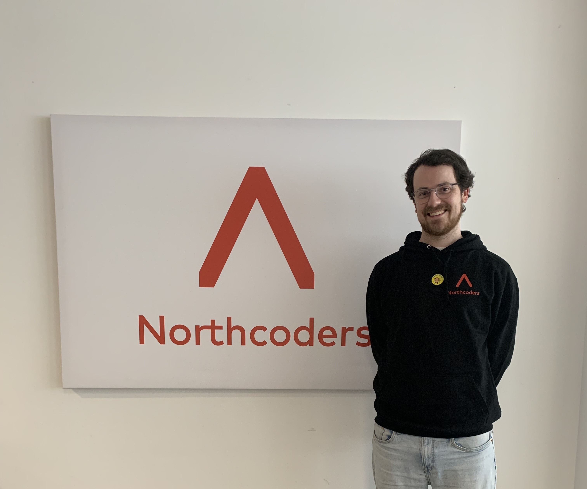
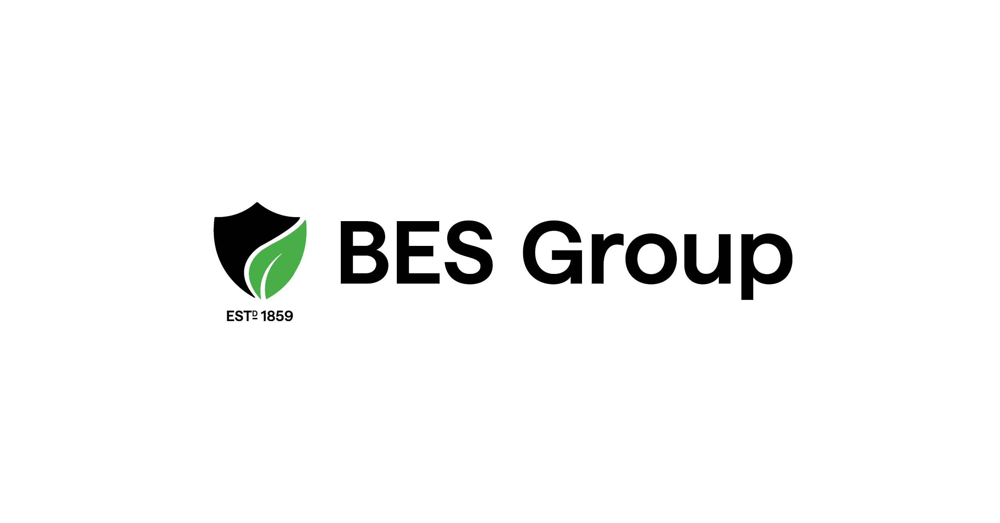
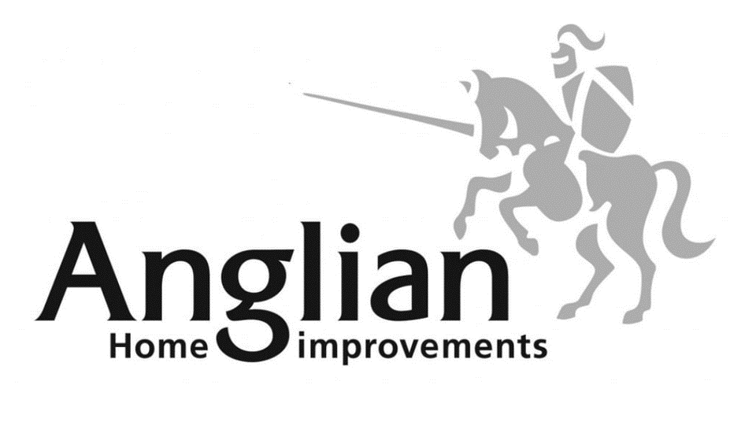
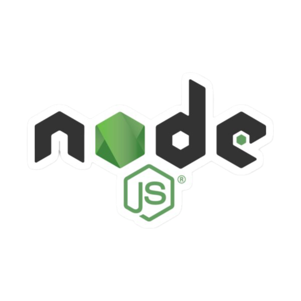
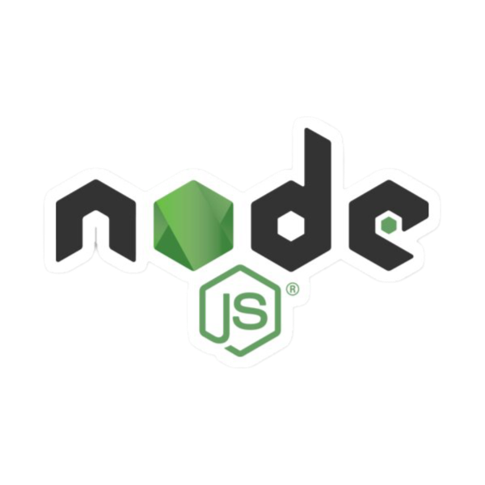

I'm a logical and creative thinker when it comes to problem solving. I’m always eager to learn new skills and develop myself,
for example, I’m currently developing my skills in JavaScript, Node.js and React.
I’m a calm person who doesn’t get stressed too often, allowing me to stay focused in pressured situations and maintain a good work ethic.
In previous jobs I’ve been proud of my communicational and people skills and enjoy working alone or within a team.
I am a methodical and inventive problem solver, adept at navigating complexities with a logical approach. Continual growth is paramount to me. Presently,
I am honing my expertise in HTML, CSS, JavaScript, and Node.js, alongside advancing my proficiency in React and React Native.
My composed demeanor allows me to maintain focus even in high-pressure scenarios, ensuring a steadfast work ethic.
Throughout my career, I take pride in my robust communication and interpersonal skills, fostering productive collaborations whether working independently or within a team.
Recent
Work Experience

Northcoders
Northcoders
March 2024 - June2024
I have built expertise in both front and back-end development, enhanced my technical communication through paired programming,
and successfully launched a live interactive social news website named Soul log, integrating a back-end database with JavaScript,
Node.js, React Native, Expo, and Supabase for a prototype mobile app called DogGo.

BES Group
BES Group
March 2022 - March 2024
I oversee contract progress, invoicing, and client requests, fostering relationships with clients and engineers while managing contracts from inception to completion.
Additionally, I plan future work for engineering teams, coordinate emergency jobs, and manage engineers' visits both domestically and internationally.

Anglian Home Improvements
Anglian Home Improvements
December 2020 - March 2022
I engage daily with customers, customer service teams, and operations, collaborating across all operational areas to develop solutions for identified issues.
I schedule and coordinate remedial work, ensuring effective communication with customers regarding repairs, and compile internal data based on regional service
requests and product complaints as needed.
NSS Group
NSS Group
August 2019 - August 2020
I coordinated communication among clients, suppliers, and operatives, organized workflow, delegated tasks to our nationwide team, and managed job details, RAMs documentation,
and client follow-up calls. Additionally, I supervised emergency jobs requiring swift resolution within strict timeframes.
Various Retailers
Various retailers
September 2014 - November 2018
At Debenhams, Converse, and H&M, I took on challenging roles as a retail assistant. Starting at Debenhams, I gained invaluable insights into the daily operations.
Later, during my travels in Australia, I applied these skills to successfully navigate the unique challenges of working in a different cultural setting.
Brunel Franklin
Brunel Franklin
September 2016 - September 2017
The role encompassed post management, intricate mail-outs, document scanning, and confidential data entry, leading to a swift promotion to team leader where
I assumed increased responsibility for mission-critical tasks and received a corresponding pay raise.


 


{kind=link}